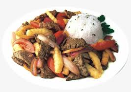

El lomo saltado es uno de los platos más representativos de la gastronomía peruana. Se prepara con carne de res salteada en una sartén a fuego fuerte, junto con cebolla, tomate, ají amarillo y sillao (salsa de soya).
Se sirve acompañado de papas fritas y arroz blanco, logrando una fusión perfecta entre la cocina peruana y la influencia oriental.
